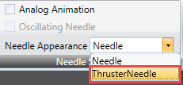
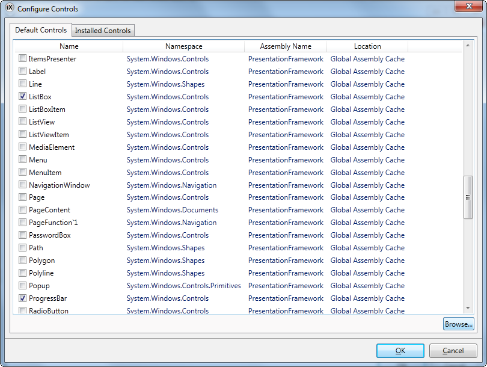
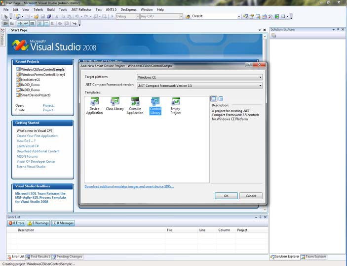

Objects
Static and dynamic objects that can be included in screens are available for selection from the Objects control group of the Home ribbon tab.
Not all objects are visible in the normal view, but are made available by scrolling. Clicking the expand button displays all the objects, categorized into groups.
An object can be created by clicking on it in the Objects group and then clicking on the screen, or by dragging it from the Objects group and dropping it on the screen. This creates the object with default size and appearance.
Dragging the object handles resizes it. Object appearance can be modified using the commands in the Format and Font control groups, but also by the controls on the Dynamics ribbon tab.
Settings for a selected object can be managed with the control groups on the General ribbon tab, and actions can be configured from the Actions ribbon tab.
An object style that is to be used frequently can be saved as an Object Variation, in order to immediately apply a predefined appearance to the object when creating it.
Related information |
|---|
Blinking Objects
Some objects can be displayed as blinking objects. Blinking is enabled for each object individually using the Property Grid.
The Blink settings can be entered either from the General group under the Dynamics tab, or from the Property Grid, under Animations. In both cases selecting Blink opens the Edit Blink Dynamics dialog.


Parameter | Description |
|---|---|
Blink Interval | Constant blink intervals: Time in ms from when the object gets invisible one time until it gets invisible the next time. For HMI panel projects, the minimum value is 400 ms, and it is recommended to use a blink interval of a multiple of 400 ms to ensure a harmonic blink experience (400 ms, 800 ms, 1200 ms, 1600 ms etc.). For PC, the minimum value is 200 ms. The default value is 1200 ms for all targets, and the maximum value is 10,000 ms for all targets. Blink intervals bound to a tag: |
Parameter | Description |
|---|---|
Select Tag for Blink Interval changes blink frequency based on the selected tag value. | |
Blink Enabled | Select Tag for Blink Enable makes it possible to enable and disable blinking depending on the selected tag value: When the tag value is equal to the given value (=True), blink is enabled. When the tag value is not equal to the given value (=False), blink is disabled. |
Security has higher priority than blink, and an object hidden by security cannot be made visible through blink.
It is not recommended to use Blink on objects that should be used for user interaction.
Related information |
|---|
Limitations for HMI Panel Targets
Blink is not supported for the following objects in HMI panel targets:
Alarm Distributor Viewer | Alarm Viewer | Audit Trail Viewer |
|---|---|---|
Check Box | Combo Box | Database Viewer |
Group Box | List Box | Media Player |
PDF Viewer | Progress Bar | Radio Button |
Web Browser | - | - |
Related information |
|---|
Shapes
Static shapes such as Line, Rectangle and Poly Line can be used to draw background graphics. Tags can be linked to shapes under Dynamics, to change their appearance (e.g. color and position) depending on value changes of controller tags.
Points for an existing Poly Line object can be adjusted by selecting Edit Points from the context menu.
Ellipse | Line | Polyline | Rectangle |
Note
Bevel for Poly Line and Ellipse is only supported for projects designed for PC targets.
HMI Controls
Dynamic objects such as buttons, analog numerics, sliders, meters and trend viewers are linked to tags in order to create control and monitoring functions.
The tag associated with an object can be selected and changed from the Tag/Security group on the Home or General ribbon tabs, or from the context menu. Links to tags (controller tags, internal tags or system tags) are selected in the Tag drop-down list.
Objects containing text can be edited directly from the keyboard, either when just created, or when a single selection is done on the text area of the object.
It is also possible to use script code to control the text contents of buttons, texts or text boxes.
Note
Use of braces around digits, such as ‘{0}’, is not allowed in text objects. This will result in an error when opening the screen.
The following HMI controls are described:
 | |||
 |
Action Menu Object
The Action menu object is used to display multiple menu groups, each containing its own sets of actions which can be triggered in iX Runtime from the action menu object.
Settings for the Action Menu object are available from the General ribbon tab while the object is selected:
Settings Group
Parameter | Description |
|---|---|
Edit Actions | Opens the Edit Actions dialog |
View type | Choose between Bar, Expand and Tab |
Item Width | Set the width of the items. This is only available for the Bar and Expand View types. |
Item Height | Set the height of the items |
Orientation | Set the orientation of the items. This is only available for the Bar View type. |
Picture Width | Set the width of the pictures for the items |
Picture Height | Set the height of the pictures for the items |
Scroll Bar Width | Set the width of the scroll bar. |
Touch Settings Group
Parameter | Description |
|---|---|
Scroll Sensitivity | Set the sensitivity of the scroll. Minimum value is 1, maximum value is 10. |
Edit Actions Dialog
The Actions tab in the Edit Actions dialog contains the following properties:
Parameter | Description |
|---|---|
Text | The text to be displayed for the item |
Picture | The picture to be displayed for the item |
Parameter | Description |
|---|---|
Make Transparent | Set transparency on the item |
Action | Configure the action when the item is clicked |
The Menu Groups tab in the Edit Actions dialog contains the following properties:
Parameter | Description |
|---|---|
Menu Group Name | The name of the menu group |
Picture | The picture to be displayed for the menu group |
Make Transparent | Set transparency on the menu group |
Note
Make sure not to use semi-transparent pictures in projects targeted for HMI panel. Since these targets do not fully support opacity, semi-transparent pictures may turn out unclear.
Adding a New Action
In the Edit Actions dialog select the Actions tab. Click the Add button. A new item will be added and placed last in the list. To configure the actions for the item, click the “…” button in the Action column.
Adding a New Menu Group
In the Edit Actions dialog select the Menu Groups tab. Click the Add button. A new menu group will be added and placed last in the list. The menu group will be displayed in the Actions tab as a new menu group tab.
Action Menu Dynamics
It is also possible to set dynamics, i.e. tag dependent values for the Action Menu properties. These can be found in the Dynamics tab in the ribbon bar.
Related information |
|---|
Alarm Viewer Object
The Alarm Viewer is used to display and manage alarm items, for example indication of out-of-bounds tag values. The viewer consists of a list area and a button area.
Related information |
|---|
Analog Numeric Object
The Analog Numeric object displays a box with a numeric or alphanumeric value. The value can be connected to a tag.
Settings for the analog numeric object are available from the General ribbon tab while the object is selected:
Display Format Group
Parameter | Description |
|---|---|
Type | Selection of Integer, Decimal, String, Hex or Binary display format |
Number of Decimals | Maximum number of decimals to display in the object. Only available when Type = Decimal. The number of decimals will be represented by a “#” symbol on the analog numeric object. |
Limit Characters to | Makes it possible to maximize the number of displayed characters. The number of characters will be represented by a “#” symbol on the analog numeric object. |
Zero Fill | Fills empty character positions with zeros, to let the maximum number of characters always be displayed |
Note
The “Limit Characters to” function, in combination with the string format type is not supported for the Traditional Chinese, Simplified Chinese and Simplified Chinese (Compact) languages.
Prefix/Suffix Group
Parameter | Description |
|---|---|
Prefix/Suffix | Text value that will precede/follow the object value |
Tag/Security Group
Parameter | Description |
|---|---|
Select Tag | Connection to a tag from the tags configuration page |
Select Security Groups | Allows limiting access of the object based on security groups. If left empty, the object can be accessed by anyone. |
Select Visibility | Configuration of visibility: Default: The visibility specified on the General tab of the Security Manager is used Disabled: The object is disabled for users with insufficient access rights Hidden: The object is invisible for users with insufficient access rights Normal: The object looks normal also for users with insufficient access rights |
Format Group
Parameter | Description |
|---|---|
Auto Stretch Font | Resizes the font to fit the height of the object. Default setting for the analog numeric object. |
Disable Operator Input | Disables input in runtime |
Transparent | Makes the object transparent, i.e. makes the frame and background color invisible |
Text Alignment Group
Parameter | Description |
|---|---|
Horizontal / Vertical | Adjusts the object horizontally or vertically |
Validation Group
Parameter | Description |
|---|---|
On Input | Input values are validated, based on Lower Limit and Upper Limit, when the box is checked |
On Display | Background color changes according to Other Colors on the Format tab if upper or lower limit are violated, when the box is checked |
Lower Limit/Upper Limit | Minimum/maximum value that can be entered in runtime when On Input is checked, or that will change the background color of the object when On Display is checked |
Note
The font size of the analog numeric object is auto-sized when resizing the object frame by default, and is not adjusted in the Font control of the Home ribbon tab. Uncheck Auto Stretch Font in the Text group first, and then change the font size on the Home ribbon tab.
Animated GIF
The Animated GIF (Graphics Interchange Format) object allows including a moving graphic picture in the iX Developer project. Animated GIFs can be imported to the project by browsing the PC environment for graphic files. Imported animated GIFs are added to the Project Picture folder in the Component Library.
The Animated GIF can be connected to a tag which controls animation. When the value of the connected tag is 0, then animation is turned off and the picture is displayed static in its initial design. An Animated GIF not connected to a tag runs animated continuously.
Settings for the Animated GIF object are available from the General ribbon tab while the object is selected.
Settings Group
Parameter | Description |
|---|---|
Change Picture | Opens a browse dialog for selection of picture |
Reset Picture | Restores original height and width to picture |
Stretch | Adapts height and width to the selection frame when resizing the picture |
Transparent | Makes the object transparent, i.e. makes the frame and background color invisible |
Note
Make sure not to use semi-transparent pictures in projects targeted for HMI panel. Since these targets do not fully support opacity, semi-transparent pictures may turn out unclear.
Tag/Security Group
Parameter | Description |
|---|---|
Select Tag | Connection to a tag from the tags configuration page |
Select Security Groups | Allows limiting access of the object based on security groups. If left empty, the object can be accessed by anyone. |
Select Visibility | Configuration of visibility: Default: The visibility specified on the General tab of the Security Manager is used. Disabled: The object is disabled for users with insufficient access rights Hidden: The object is invisible for users with insufficient access rights Normal: The object looks normal also for users with insufficient access rights |
Animated Label Object
The Animated Label object is used to display an animated text label in iX Runtime.
Settings for the Animated Label object are available from the General ribbon tab while the object is selected:
Note
Using the animated label object creates a slightly higher load on the CPU.
Parameter | Description |
|---|---|
Text | The text to be displayed in the animated label |
Animated | If enabled, the text starts to animate |
Animation speed | Set the speed for the animation. Minimum value is 1, maximum value is 32,767. |
Animation Direction | Set the animation direction: From right to left From left to right From right to left to right From left to right to left From down to up From up to down From down to up to down From up to down to up |
Animated Label Dynamics
It is possible to set dynamics, i.e. tag dependent values for the Animated Label properties. These can be found in the Dynamics tab in the ribbon bar.
Related information |
|---|
Audit Trail Viewer Object
The Audit Trail Viewer displays information about operator changes that have been logged with the audit trail function.
Related information |
|---|
Button Object
The Button tool draws a button with a text and/or picture. The button can be configured to perform a specific task in runtime via the Actions ribbon tab or using script. The text on the button object can also be set to depend directly on a tag value using the General control on the Dynamics ribbon tab. If a picture is used, the picture file is added to the Project Pictures folder in the Component Library.
Settings for the button object are available from the General ribbon tab while the object is selected.
Picture Group
Parameter | Description |
|---|---|
Picture | Selects a picture to display on the button. Pictures from the Project Pictures folder is available for selection directly. It is also possible to browse the PC environment for a picture. Select No Picture to remove a previously selected picture. Checking the Multi Picture check box will make it possible to display different pictures based on the value of a connected tag according to section Configure Multi Pictures. |
Multi Picture | Multi Picture or single picture displayed on button. |
Transparent | Makes the picture transparent |
Note
Make sure not to use semi-transparent pictures in projects targeted for HMI panel. Since these targets do not fully support opacity, semi-transparent pictures may turn out unclear.
Configure Multi Pictures
Different pictures can be displayed on the button based on the value of a connected tag, following the steps below:
Check the Multi Picture check box.
Click on the Picture control on the Picture group of the General tab.
Select a tag to control which picture to display.
Click Add to add pictures and configure start and end values for each picture. You can browse the PC for pictures, or select pictures from the current project.
Click OK.
The picture on the button will now change according to the value of the selected tag. When the value is out of limits, no picture is displayed.
Picture Alignment Group
Parameter | Description |
|---|---|
Vertical Alignment/Horizontal Alignment | Set alignment for the picture |
Clicking the small arrow in the lower right corner of the Picture Alignment group displays the picture properties with a number of additional picture settings.
Style Group
Parameter | Description |
|---|---|
Style | Predefined graphical styles for the button |
Appearance | The appearance of the button, including possibility to make the button rounded and settings for each corner of the button. |
Additional predefined styles for this object are found in the Object Variations group.
Note
When editing default button style properties, for example corner radius, appearance in runtime may sometimes differ from when designing the project in iX Developer.
Related information |
|---|
Text Group
Parameter | Description |
|---|---|
Text | Text displayed on the button |
Multiline | Lets the text run over more than one line, using [Enter]. Confirm the text entry by pressing [Ctrl] + [Enter]. |
Word Wrap | Wraps the text to fit the width of the button |
Configure Texts | Links the displayed text to a tag. The Text field value is shown if the selected tag is not within the set limits. |
Text Alignment Group
Parameter | Description |
|---|---|
Horizontal/Vertical | Adjusts the text on the button horizontally or vertically |
Visibility Group
Parameter | Description |
|---|---|
Transparent | Makes the object transparent |
Creating a Button with Momentary Function
In order to create a button with a momentary function, you need to combine a Set Tag action for Mouse Down with a Reset Tag action for Mouse Up .
Related information |
|---|
Circular Meter Object
The Circular Meter represents a numeric value, and displays the value of a connected tag.
Different styles can be used to change the graphical profile of the meter, and also if the meter is to be full, half or quarter.
Circular meters in Black Full style, Chrome Half style and Vintage Quarter style
Settings for the meter object are available from the General ribbon tab while the object is selected.
Angular Settings Group
Parameter | Description |
|---|---|
Start Angle / End Angle | Determines the placement of the scale on the meter. The angular value is based on a start (0 degrees) at three o’clock, in a counter clockwise direction from there. The Start Angle must differ from the End Angle. |
Text Rotation | Select Parallel to let the numbers follow the outline of the meter, or None to display the numbers aligned horizontally. |
Clockwise | Determines rotation orientation, clockwise or counter clockwise. |
Region Settings Group
Parameter | Description |
|---|---|
Low Region / Medium Region / High Region Min/Max | Define colors for up to 3 regions, and at which values to start and stop each region. Entering 0 for both minimum and maximum values displays no region color. |
Value Scale Group
Parameter | Description |
|---|---|
Min Value / Max Value | Start/end value of scale. These values can consist of one decimal digit. |
Major Ticks | Number of labeled scale marks on the meter |
Minor Ticks | Number of scale ticks between two adjacent major ticks |
Style Group
Parameter | Description |
|---|---|
Style | Predefined graphical styles for the meter. The smaller styles are intended in particular to allow full visibility in the smaller HMI panels. |
Appearance | The appearance of the meter; full, half or quarter |
Additional predefined styles for this object are found in the Object Variations group.
Related information |
|---|
Needle Settings Group
Parameter | Description |
|---|---|
Analog Animation | Animation that creates a smooth movement of the needle at value change. |
Oscillation | Animation of needle initially oscillating around the new value. The function is only available in combination with Analog Animation. |
Needle Appearance | The style that the needle indicator is rendered to the display. This property is not available for PC projects. |
When Analog Animation is selected, it is possible to activate Shortest Path in the property grid under Appearance. The setting affects the direction of the animated needle, resulting in a counter clockwise movement if this is the shortest path between two indicated values.
Note
The Shortest Path property is not available for PC targets.
You can also use the thruster needle for circular meter objects.
|  |
Note
Using animation on the circular meter objects creates a higher load on the CPU. Therefore it is recommended to limit the use of the needle animation to only a few circular meters per screen, especially for the smaller panel models.
Tag/Security Group
Parameter | Description |
|---|---|
Select Tag | Connection to a tag from the tags configuration page |
Select Security Groups | Allows limiting access of the object based on security groups. If left empty, the object can be accessed by anyone. |
Select Visibility | Configuration of visibility: Default: The visibility specified on the General tab of the Security Manager is used Disabled: The object is disabled for users with insufficient access rights Hidden: The object is invisible for users with insufficient access rights Normal: The object looks normal also for users with insufficient access rights |
Visibility Group
Parameter | Description |
|---|---|
Transparent | Makes the object transparent |
Scale | When unchecked, the scale color of the meter is made transparent. Scale color is set from Other Colors on the Format tab. |
Chart Object
The chart object is used to display values of connected array tags.
Settings for the chart object are available from the General ribbon tab while the object is selected.
Chart Settings Group
Parameter | Description |
|---|---|
Edit Series | Add, remove and edit the current series for this chart |
Chart Types | Choose chart type. Available types are: Area Area Horizontal Bar Bar Join Donut Histogram Kagi Line Line Fast Line Horizontal Line Point Pie Points Radar |
Header | Set the name that is displayed above the chart |
Show Labels | If selected, then the chart will show labels adjacent to each plotted data item indicating its value. If not selected the labels will be hidden. |
3D View | Set a 3D look and feel for the chart |
X Axis Settings Group
Parameter | Description |
|---|---|
Visible | Set the visibility of the X axis |
Grid Visible | Set the visibility of the X axis grid lines. |
Automatic | Automatically calculates the minimum and maximum X axis values. Overrides the Minimum and Maximum properties |
Minimum | Set the minimum value of the X axis. If automatic is set, this value is ignored |
Maximum | Set the maximum value of the X axis. If automatic is set, this value is ignored |
Y1 Axis Settings Group
Parameter | Description |
|---|---|
Visible | Set the visibility of the Y1 axis |
Grid Visible | Set the visibility of the Y1 axis grid lines. |
Automatic | Automatically calculates the minimum and maximum Y1 axis values. Overrides the Minimum and Maximum properties. |
Minimum | Set the minimum value of the Y1 axis. If automatic is set, this value is ignored. |
Maximum | Set the maximum value of the Y1 axis. If automatic is set, this value is ignored. When using charts with visible labels on curves the maximum value is extended to make room for label. |
Y2 Axis Settings Group
Parameter | Description |
|---|---|
Visible | Set the visibility of the Y2 axis |
Grid Visible | Set the visibility of the Y2 axis grid lines. |
Automatic | Automatically calculates the minimum and maximum Y2 axis values. Overrides the Minimum and Maximum properties. |
Minimum | Set the minimum value of the Y2 axis. If automatic is set, this value is ignored. |
Maximum | Set the maximum value of the Y2 axis. If automatic is set, this value is ignored. When using charts with visible labels on curves the maximum value is extended to make room for label. |
Style Group
Parameter | Description |
|---|---|
Style | Set the style of the chart |
Visibility Group
Parameter | Description |
|---|---|
Scale | Set the visibility of the scale |
Transparent | Make the chart transparent |
Header | Set the header visibility |
Legend | Set the legend visibility |
The Edit Series Dialog
Clicking the Edit Series control in the Chart Settings Group will open the Edit Series Dialog. The Edit Series Dialog contains the following settings:
Parameter | Description |
|---|---|
Name | The name of the Series, as shown in the legend in the chart. |
X Tag | The X Tag values. The tag must be an array tag. The number of elements shown will be the lowest common denominator of the X Tag array size and the Y Tag array size. |
Y Tag | Optional: The Y Tag values for the chart. The tag must be an array tag. If this value is not chosen, the X Tag Values will still be visible and the Y Axis will be set automatically. The number of elements shown will be the lowest common denominator of the X Tag array size and the Y Tag array size. |
Size | Optional: The number of elements in the tag arrays. This property overrides the sizes of the X Tag array size and Y Tag array size. If this value is not set, the lowest common denominator of the X Tags array size and the Y Tags array size will be chosen as size. |
Labels | Set a label for each point in the chart. There is one label for each available tag value. |
Color | Choose the color of the series. Applies to all chart types except Pie and Donut. |
Colors | Select the colors to be used for the pie/donut graphic that will be generated for the series. Applies to the Pie and Donut chart types. |
Thickness | Set the thickness of the series. This applies for the chart types Line, Line Fast, Line Horizontal and Line Point. |
Axis Type | Select the Y Axis that this series will use. |
Note
Chart objects with large arrays where values are frequently changing may affect performance.
Related information |
|---|
Database Viewer Object
The Database Viewer can be used to display database contents in runtime.
For HMI panel projects, only databases included in the current project are available. For PC targets, it is possible to access databases from anywhere in the network environment.
Settings for the database viewer object are available from the General ribbon tab while the object is selected:
Settings Group
Parameter | Description | ||||||||||||||||||||||||||||||||||||||||||||||||
|---|---|---|---|---|---|---|---|---|---|---|---|---|---|---|---|---|---|---|---|---|---|---|---|---|---|---|---|---|---|---|---|---|---|---|---|---|---|---|---|---|---|---|---|---|---|---|---|---|---|
Show Controls | When the box is checked, the user is able to select database and database table in runtime | ||||||||||||||||||||||||||||||||||||||||||||||||
Database | Path to database to be loaded automatically in runtime [a] | ||||||||||||||||||||||||||||||||||||||||||||||||
Table Name | The table in the selected database to be loaded automatically in runtime [a] | ||||||||||||||||||||||||||||||||||||||||||||||||
Browse Data Table | Opens a browse dialog for selection of database and database table in design time. The path and table name will be added to the Database and Table Name fields. | ||||||||||||||||||||||||||||||||||||||||||||||||
[a] If the entered database or table does not exist or is not valid, an empty database viewer is displayed in runtime. | |||||||||||||||||||||||||||||||||||||||||||||||||
Note
Simulation of the object on the development PC is supported only for PC targets.
Related information |
|---|
Digital Clock Object
The digital clock displays date, time and/or day of week.
The time zone is selected on the System ribbon tab and is transferred to the target when the project is downloaded to it. If no time zone is selected, the time zone that has been selected for the panel or PC will be retained.
The date and time display format (for example using AM/PM for time) is based on the operating system settings. For HMI panel projects, this format may be altered by selecting another region on the System ribbon tab.
Note
For PC projects the region settings need to be changed in the system account to take place.
Related information |
|---|
Display Format Group
Parameter | Description |
|---|---|
DateAndTime / Date / Time | Selection of date and time components |
Show Day of Week | When checked, day of week is displayed |
Show Seconds | When checked, seconds are displayed |
Linear Meter Object
The Linear Meter represents a numeric value, and displays the value of a connected tag.
Different styles can be used to change the graphical profile of the meter, and also if the meter is to be horizontal or vertical.
Linear meters in Classic Horizontal style and Eclipse Vertical style
Settings for the meter object are available from the General ribbon tab while the object is selected:
Value Scale Group
Parameter | Description |
|---|---|
Min Value / Max Value | Start/end value of scale These values can consist of one decimal digit. |
Major Ticks | Number of labeled scale marks on the meter |
Minor Ticks | Number of scale ticks between two adjacent major ticks |
Style Group
Parameter | Description |
|---|---|
Style | Predefined graphical styles for the meter. The smaller styles are intended in particular to allow full visibility in the smaller HMI panels. |
Appearance | The appearance of the meter; horizontal or vertical |
Tag/Security Group
Parameter | Description |
|---|---|
Select Tag | Connection to a tag from the tags configuration page |
Select Security Groups | Allows limiting access of the object based on security groups. If left empty, the object can be accessed by anyone. |
Select Visibility | Configuration of visibility: Default: The visibility specified on the General tab of the Security Manager is used. Disabled: The object is disabled for users with insufficient access rights Hidden: The object is invisible for users with insufficient access rights Normal: The object looks normal also for users with insufficient access rights |
Visibility Group
Parameter | Description |
|---|---|
Transparent | Makes the object transparent; only indicator bar and scale will be visible |
Scale | When unchecked, the scale color of the meter is made transparent. Scale color and indicator color are set from Other Colors on the Format tab. |
Multi Picture Object
The Multi Picture object allows using a set of pictures as an object. The pictures change in runtime depending on intervals of a tag value.
Pictures can be imported to the project by browsing the hard disk for graphic files. Imported pictures are added to the Project Pictures folder in the Component Library.
Settings for the Multi Picture object are available from the General ribbon tab while the object is selected.
Settings Group
Parameter | Description |
|---|---|
Configure Pictures | Configuration of start/end values of intervals and selection of pictures for each interval. Pictures can be selected from the Project Pictures folder or from the hard disk. Transparency can also be set. Original picture size is displayed. The Add/Delete buttons are used to add and remove items to/from the object. |
Reset Picture | Restores original height and width to picture. |
Stretch | Adapts height and width to the selection frame when resizing the picture. |
Lock Aspect Ratio | Maintains the height/width ratio of the object. |
Note
Make sure not to use semi-transparent pictures in projects targeted for HMI panels. Since these targets do not fully support opacity, semi-transparent pictures may turn out unclear.
Related information |
|---|
Picture Object
The Picture object allows using a picture as an object. Pictures can be imported to the project by browsing the PC environment for graphic files. Imported pictures are added to the Project Pictures folder in the Component Library.
The displayed picture can also be dynamic; depending of a set of pictures that have been linked to intervals in a tag value.
Settings for the picture object are available from the General ribbon tab while the object is selected.
Settings Group
Parameter | Description |
|---|---|
Change Picture | Opens a browse dialog for selection of picture |
Reset Picture | Restores original height and width to picture |
Stretch | Adapts height and width to the selection frame when resizing the picture |
Transparent | Makes the object transparent, i.e. makes the frame and background color invisible |
Note
Make sure not to use semi-transparent pictures in projects targeted for HMI panels. Since these targets do not fully support opacity, semi-transparent pictures may turn out unclear.
Related information |
|---|
Roller Panel Object
The Roller Panel object is used to display predefined texts for certain tag values.
Settings for the Roller Panel object are available from the General ribbon tab while the object is selected.
Settings Group
Parameter | Description |
|---|---|
Title | Set the title for the Roller Panel |
Title Visible | Determines if the title is visible or not |
Loop Scroll | Determines if the values will loop around or not |
Disable Operator Input | Determines if the Roller Panel is editable or not |
Touch Settings Group
Parameter | Description |
|---|---|
Scroll Sensitivity | Set the sensitivity of the scroll |
Scroll Friction | Set the friction of the scroll |
Text Group
Parameter | Description |
|---|---|
Configure Texts | Opens the Configure Texts dialog |
Configure Text Dialog
The Configure Texts dialog contains the following properties:
Parameter | Description |
|---|---|
Text | The text to be displayed for the item |
Start Value | The starting value for when this item should be selected |
End Value | The ending value for when this item should be selected |
Roller Panel Dynamics
It is also possible to set dynamics, i.e. tag dependent values for the Roller Panel properties. These can be found in the Dynamics tab in the ribbon bar.
Related information |
|---|
Slider Object
The Slider can be used to adjust a numeric value. The slider setsa value toa connected tag. If the tag value changes for other reasons, the slider control handle will show the actual value in runtime.
Sliders in Chrome and Eclipse Horizontal styles, and Vintage Vertical style.
Settings for the slider object are available from the General ribbon tab while the object is selected.
Value Scale Group
Parameter | Description |
|---|---|
Min Value/Max Value | Start/end value of scale These values can consist of one decimal digit. |
Major Ticks | Number of labeled scale marks on the slider |
Minor Ticks | Number of scale ticks between two adjacent major ticks |
Style Group
Parameter | Description |
|---|---|
Style | Predefined graphical styles for the slider. The smaller styles are intended in particular to allow full visibility in the smaller HMI panels. |
Appearance | The appearance of the slider; horizontal or vertical |
Tag/Security Group
Parameter | Description |
|---|---|
Select Tag | Connection to a tag from the tags configuration page |
Select Security Groups | Allows limiting access of the object based on security groups. If left empty, the object can be accessed by anyone. |
Select Visibility | Configuration of visibility: Default: The visibility specified on the General tab of the Security Manager is used. Disabled: The object is disabled for users with insufficient access rights Hidden: The object is invisible for users with insufficient access rights Normal: The object looks normal also for users with insufficient access rights |
Visibility Group
Parameter | Description |
|---|---|
Transparent | Makes the object transparent |
Scale | When unchecked, the scale color of the slider is made transparent. Scale color and indicator color (color of the handle) are set from Other Colors on the Format tab. |
Tag Monitor Object
The Tag Monitor object makes it possible to show and set the values of tags in the system. This is useful for making a system diagnosis.
Settings for the Tag Monitor object are available from the General ribbon tab while the object is selected.
Button Group
Parameter | Description |
|---|---|
Del Selected | Delete the selected tag |
Add | Add a tag |
Clear | Delete all the tags |
Display Settings Group
Parameter | Description |
|---|---|
Configure columns | Opens a dialog where it is possible to configure the columns in the tag monitor object |
Show Column Headers | Select if the column headers are to be shown in the tag monitor object |
Text Object
The Text object is used to display read-only information for the operator. The displayed text can be static, or linked to intervals in a tag value that contain different strings. The text object can also be set to depend directly on a tag value using the General control on the Dynamics ribbon tab.
Settings for the text object are available from the General ribbon tab while the object is selected.
Text Group
Parameter | Description |
|---|---|
Text | Text that the object displays |
Multiline | Lets the text run over more than one line, using [Enter]. Confirm the text entry by pressing [Ctrl] + [Enter]. |
Word Wrap | Wraps the text to fit the width of the object. Not available if Autosize is selected. |
Configure Texts | Links the displayed text to a tag. The Text field value is shown if the selected tag is not within the set limits. |
Auto Stretch Font | Resizes the font to fit the height of the object. Not available if Autosize is selected. |
Auto Size | Resizes the object according to the size of the default text string length and font size. Default setting for the text object. |
Text Alignment Group
Parameter | Description |
|---|---|
Horizontal / Vertical | Adjusts the text in the object horizontally or vertically. Not available if Autosize is selected. |
Touch Combo Box Object
The Touch Combo Box object is used to create text selections from a drop-down list.
Settings for the Touch Combo Box object are available from the General ribbon tab while the object is selected.
Settings Group
Parameter | Description |
|---|---|
Auto Size Item Height | The Touch Combo Box will ignore the Item Height value and size the values automatically |
Item Height | Set the height of the individual items in the Touch Combo Box |
ArrowBox Width | Set the width of the Arrow Box |
ScrollBar Width | Set the width of the scroll bar |
Text Group
Parameter | Description |
|---|---|
Configure Texts | Opens the Configure Texts dialog |
Configure Text Dialog
The Configure Texts dialog contains the following properties:
Parameter | Description |
|---|---|
Text | The text to be displayed for the item |
Start Value | The starting value for when this item should be selected |
End Value | The ending value for when this item should be selected |
Touch Settings Group
Parameter | Description |
|---|---|
Scroll Sensitivity | Set the sensitivity of the scrolling |
Touch Combo Box Dynamics
It is also possible to set dynamics, i.e. tag dependent values for the Touch Combo Box properties. These can be found in the Dynamics tab in the ribbon bar.
Related information |
|---|
Touch List Box Object
The Touch List Box object is used to handle a list of predefined texts.
Settings for the Touch List Box object are available from the General ribbon tab while the object is selected.
Settings Group
Parameter | Description |
|---|---|
Separator Visible | Show or hide a separator between the items in the Touch List Box |
Item Height | Set the height of the individual items in the Touch List Box |
ScrollBar Width | Set the width of the scroll bar |
Touch Settings Group
Parameter | Description |
|---|---|
Scroll Sensitivity | Set the sensitivity of the scrolling |
Text Group
Parameter | Description |
|---|---|
Configure Texts | Opens the Configure Texts dialog |
Configure Texts Dialog
The Configure Texts dialog contains the following properties:
Parameter | Description |
|---|---|
Text | The text to be displayed for the item |
Start Value | The starting value for when this item should be selected |
End Value | The ending value for when this item should be selected |
Touch List Box dynamics
It is also possible to set dynamics, i.e. tag dependent values for the Touch List Box properties. These can be found in the Dynamics tab in the ribbon bar.
Related information |
|---|
Trend Viewer Object
Trend viewers are used to display values of connected tags. Trend viewer curves represent tag values over time. A trend viewer object can show any number of trend viewer curves.
Note
A large number of trend viewer pens and short sampling intervals may affect communication performance.
Related information |
|---|
Media Controls
The media controls are used to display media files, pdf files and web pages in runtime. The following media controls are described:
Media Player Object
Media files can be connected to the media player object, which allows selecting, starting and stopping the files in runtime. The table below shows the supported media formats for the various panels.
Panel | Supported Media Formats | ||||||||||||||||||||||||||||||||||||||||||||||||
|---|---|---|---|---|---|---|---|---|---|---|---|---|---|---|---|---|---|---|---|---|---|---|---|---|---|---|---|---|---|---|---|---|---|---|---|---|---|---|---|---|---|---|---|---|---|---|---|---|---|
X2 base iX TxA | No media player object | ||||||||||||||||||||||||||||||||||||||||||||||||
iX TxB iX TxC | .mpeg1, .wmv | ||||||||||||||||||||||||||||||||||||||||||||||||
X2 pro 4 X2 pro 7 X2 control 4/7 X2 marine 7 (including SC) | .mpeg1 | ||||||||||||||||||||||||||||||||||||||||||||||||
X2 marine 7 HB (including SC) X2 marine 15 (including SC and HB) X2 pro 10/12/15/21 X2 control 10/12/15/21 X2 extreme 7/15 (including SL, SC and HP) | .mpeg1, .avi, .wmv, .mpeg4[a] | ||||||||||||||||||||||||||||||||||||||||||||||||
[a] Only mpeg4 simple profile partial codec (included in WMV lib) is supported. More compressed/advanced codecs of mpeg4, for example AVC, is not supported. | |||||||||||||||||||||||||||||||||||||||||||||||||
Browse Folders Group
Parameter | Description |
|---|---|
Project Files | Default option for browsing. The project files are listed in the Component Library. At least one of the folders has to be chosen. |
External Memory Card | Select this option for browsing if project files are placed on an external memory card. At least one of the folders has to be chosen. |
Settings Group
Parameter | Description |
|---|---|
Media Source | Select a media file to add to the media player, from the project files folder or by browsing the PC |
Note
The object is not supported on X2 base targets. Simulation of the object on the development PC is supported only for PC targets.
Note
Connecting a tag to a Media Player Object will cause the media player to try to play a media clip with a name that corresponds to the tag’s value, ignoring the configured Media Source parameter.
Note
It is not recommended to use more than one Media Player object per screen. The videos are also not recommended to havea higher resolution than the Media Player object.
Any video that has a higher resolution than the Media Player object will be resized to fit the Media Player object.
When caching screens containing Media Player objects, it will result in better performance, but may cause inconsistencies when playing the video, such as lower frame rate. It is also recommended to use the latest image version to avoid inconsistencies when loading videos.
Note
Videos with a resolution that is larger than the panel resolution may cause inconsistencies when playing the video.
Scripting to the Media Player Object
When scripting to the Media Player object, the name of the current media file has to be stated, for example:
MediaPlayer1.Source = “Bear.wmv”;
Prior to running the script, the media file has to be added manually to the Project Files folder. When the script is executed, the file will be copied to the output directory.
Events for the media player can be used, for example:
MediaPlayer1.Play();
Related information |
|---|
PDF Viewer Object
PDF files can be displayed in runtime using the PDF viewer object. The added files are available from the Component Library.
Note
PDF Viewer on X2 pro is not fully supported. There are some limitations for display of table of contents, headings, table text and scroll bar.
Browse Folders Group
Parameter | Description |
|---|---|
Project Files | Default option for browsing. The project files are listed in the Component Library. At least one of the folders has to be chosen. |
External Memory Card | Select this option for browsing if project files are placed on an external memory card. At least one of the folders has to be chosen. |
Settings Group
Parameter | Description |
|---|---|
PDF File | Select a PDF file to add to the PDF viewer, from the project files folder or by browsing the PC |
Buttons | Select which buttons to make available in runtime |
In an HMI panel, all PDF files in the project files folder will be available for selection in runtime, if the Open button is checked.
Note
When using a PDF viewer object in a popup screen, only the default style for the popup screen is supported.
Note
The object is not supported on X2 base or X2 panels 4” and 7“ (except for X2 marine 7 HB SC) targets. Simulation of the object on the development PC is supported only for PC targets.
Related information |
|---|
Web Browser Object
Web pages can be displayed using the web browser. It is possible to set up the web browser with regular web browsing functionality, with selection of web addresses in a list or input via the virtual keyboard. It is also possible to allow showing certain defined web pages only, or a local HTM/HTML file.
If certain characters are displayed incorrectly in the web browser, it is because the panel does not support the font in that language.
The virtual keyboard in iX Developer is not used in the web browser object. For iX TxC panels and PC targets we recommend using the Tablet PC Input Panel in Windows (found under Accessories > Tablet PC). Otherwise we recommend using an external keyboard.
Note
Microsoft Internet Explorer 9 or later is required.
Settings Group
Settings for the Web Browser object are available from the General ribbon tab while the Web Browser object is selected:
Parameter | Description |
|---|---|
Address | The default web page of the web browser object. |
Home | The web page that will be displayed when the Home button is pressed. |
Favorites | Addition of web pages that will be available for selection from the drop-down address field in runtime. |
Address Read Only | Checking the box disables entering text in the address field |
Address Field | Unchecking the box removes the address field in runtime |
Go Button | Unchecking the box removes the Go button in runtime |
Home Button | Unchecking the box removes the Home button in runtime |
Back Button/Forward Buttons | Unchecking the box removes the navigation buttons in runtime |
Referring to a local HTM/HTML file can be useful for example when the HMI panel is not connected to Internet. The local file — a .HTM- or .HTML-file — has to be located in the Project Files folder of the current project, and is addressed in the following format: “File://filename.html” where “filename.html” represents the actual file”, e.g. File://ReadMe.html.
Web Browser Limitations
The web browser object functionality is limited under some circumstances:
Function | Limitation description | PC targets | HMI panel targets |
|---|---|---|---|
Web browser object | Supported | Not supported on X2 base targets | |
Popup windows | Opening popup windows from the web browser in runtime | Not supported | Not supported |
Web browser in a popup screen | Other styles than the default style for the popup screen | Not supported | Not supported |
Function | Limitation description | PC targets | HMI panel targets |
|---|---|---|---|
Simulation of the web browser | Simulation on the development PC | Supported | Not supported |
Support of some web pages | Access of some web pages from within the web browser. | Supported | May not be supported. If the web browser does not behave as expected, it is recommended to use the standard Internet Explorer, available in the iX panel, instead. The standard Internet Explorer can be started using the Run action and executing the iesample.exe file. |
Related information |
|---|
Miscellaneous Control Objects
The following controls are described:
QR Code object
The QR Code control object generates and draws a QR Code from regular text. The QR Code can either be generated from a constant string or a connected tag which regenerates the code whenever the tag value changes.
Settings for the QR Code control are available from the Property Grid tab while the object is selected, either from the screen or from the Object Browser tab.
QRCodeContent is the property which is used to generate a string to a QR Code image. The property can either be a static text or connected to a dynamic string tag.
How to setup a QR Code generated from a tag
Example:
In this example we are using an internal string tag with initial value configured. When the tag is changed in runtime, the QR Code image will be generated on the screen.
Example of QR Code generated from an internal tag. Tag value changes will automatically update the QR codeimageonthe screen.
To configure the QR Code object to generate image from static text:
Place a QR Code object on the screen surface.
Edit the text in the QRCodeContent textbox in the Property Grid. The QR Code image (on the screen) will only be regenerated when the QRCodeContent text is changed.
To configure the QR Code object to dynamically generate image froma tag:
Configure an internal tag in the tag editor by setting the Data Type to STRING. For convenience, make sure that the tag has a suitable initial value.
Place a QR Code object on the screen surface.
Open up the Edit General Dynamics dialog by clicking on the gear button to the right side of the QRCodeContent textbox in the Property Grid.
Select Raw Converter. Select the tag from section 1 above.
Optionally, edit the Default value for design mode.
Note
Creating a QR Code object without any content will create an empty object. This is shown in Runtime as an invisible QR Code object on a PC, and as a grey QR Code object on an HMI panel, since HMI panel targets do not fully support opacity.
Using QR Code in script
In cases where the QR Code image is to be generated from a script, use an internal tag binding as in the example above and write content data to the tag value ina script function.
Special Controls
The special controls are used to create attractive navigation facilities in runtime.
Navigation List Box Object
Screen navigation using the Navigation List Box object is performed via thumbnails, and scripting can be used for advanced functionality.
Note
The object is supported only for iX TxC and PC targets.
General Group
Parameter | Description |
|---|---|
Orientation | Select horizontal or vertical orientation for runtime scrolling. |
Scroll Tolerance | Defines tolerance of pressing the touch screen (or scrolling with the cursor) slightly outside of a navigation list box item in runtime before the navigation is actually carried out. |
Item Settings Group
Parameter | Description |
|---|---|
Configure Items | Definition of items included in the navigation list box object; see below. |
Height/Width | Size of the items in the navigation list box. |
Margin | Margin between navigation list box items. |
Border Width | Width of navigation list box item borders. |
Corner Radius | Corner radius of navigation list box items. |
Show Text | Selection of whether to show text below navigation list box items. |
The individual items in the navigation list box object are handled by clicking Configure Items. Use the Add and Delete buttons to add and remove items to/from the navigation list box.
Parameter | Description |
|---|---|
Picture | Selection of picture by browsing the PC environment or among the project files. |
Screen | Selection of screen to navigate to. |
Parameter | Description |
|---|---|
Script Info | Optional text to serve as a reminder if scripts are used. |
Text | Text displayed under each navigation list box item. Only visible if Show Text is checked under Item Settings. |
Use the up and down arrows to facilitate reorganizing of navigation list box items.
Related information |
|---|
Screen Carousel Object
Screen navigation using the Screen Carousel object is performed via thumbnails in a 3D view. The screen carousel can be configured to rotate automatically, or actions can be configured to control screen carousel behavior.
Note
The object is supported only for iX TxC and PC targets.
Note
If the iX Developer system requirements for the graphic card are not fulfilled, the visualization of the object will have limitations. Hardware acceleration is required.
General Group
Parameter | Description |
|---|---|
Number of Visible Items | Maximum number of visible items. |
Scroll Duration (ms) | Time used for an item to move to the next position in the carousel. |
Use Reflection | Adds a reflecting layout to the object. |
Auto Scroll | Makes the object rotate automatically. |
Item Settings Group
Parameter | Description |
|---|---|
Configure Items | Definition of items included in the screen carousel object; see below. |
Height/Width | Size of the items in the screen carousel. |
Margin | Margin between screen carousel items. |
Border Width | Width of screen carousel item borders. |
Corner Radius | Corner radius of screen carousel items. |
Show Text | Selection of whether to show text below screen carousel items. |
The individual items in the screen carousel object are handled by clicking Configure Items. Use the Add and Delete buttons to add and remove items to/from the screen carousel.
Parameter | Description |
|---|---|
Picture | Selection of picture by browsing the PC environment or among the project files. |
Screen | Selection of screen to navigate to. |
Script Info | Optional text to serve as a reminder if scripts are used. |
Text | Text displayed under each screen carousel item. Only visible if Show Text is checked under Item Settings. |
Use the up and down arrows to facilitate reorganizing of screen carousel items.
Related information |
|---|
Debug Tools
Debug tools are used for troubleshooting and monitoring.
Alarm Distributor Viewer Object
The Alarm Distributor Viewer is a debug tool, used to display information from the Alarm Distributor function.
Related information |
|---|
Windows Controls
The following Windows controls are described:
|

Check Box Object
The Check Box object controls a digital tag value. The connected tag gets the value 1 when the box is checked and the value 0 when the box is unchecked.
The appearance of the text can be adjusted in the Font group of the Home ribbon tab.
Note
Changing font family is only supported for projects designed for iX TxC and PC targets.
Settings for the check box are available from the General ribbon tab while the object is selected.
Text Group
Parameter | Description |
|---|---|
Text | Text that the object displays |
Multiline | Lets the text run over more than one line, using [Enter]. Confirm the text entry by pressing [Ctrl] + [Enter]. |
Word Wrap | Wraps the text to fit the width of the object. Not available if Autosize is selected. |
Auto Stretch Font | Resizes the font to fit the height of the object. Not available if Autosize is selected. |
Auto Size | Resizes the object according to the size of the default text string length and font size. |
Text Alignment Group
Parameter | Description |
|---|---|
Horizontal / Vertical | Adjusts the text in the text box horizontally or vertically. Not available if Autosize is selected. |
Combo Box Object
A Combo Box can be used to create selections from a drop-down list. When a keyboard is connected to the HMI panel it is also possible to make selections from the list by typing.
Settings for the combo box are available from the General ribbon tab while the object is selected:
Text Group
Click Configure Texts to enter texts for different values.
Select a tag, and then click Add until there are enough rows in the table. Enter texts and start values.
It is also possible to use script code to control the contents of a combo box.
Example
The following script code relies on the existence of a combo box (ComboBox1) and a set of predefined recipes (“Book” and “TV”).
When the screen opens, the script clears the box and writes the recipe name strings in the box. Selection from the combo box triggers loading of a recipe.
Related information |
|---|
Group Box Object
The Group Box is used to draw a labeled frame around a group of objects.
List Box Object
The List Box handles a list of predefined texts.
Text Group
Click Configure Texts to enter texts for different values.
Select a tag, and then click Add until there are enough rows in the table. Enter texts and start values.
It is also possible to use script code to control the contents of a list box.
Example
The following script code includes two objects on Screen1, a button (Button1) and a list box (ListBox1).
When the button is clicked, the script is triggered and a string is written to the list box and the value of an internal counter (count) is incremented.
Related information |
|---|
Progress Bar Object
The Progress Bar displays a meter without numeric scaling, representing an analog value. The value can be connected to a tag.
The other properties, such as orientation, minimum and maximum values, and meter color (foreground property) are set in the Property grid.
Related information |
|---|
Radio Button Object
A Radio Button controls the value of a connected digital tag.
The appearance of the text can be adjusted in the Font group of the Home ribbon tab.
Settings for the radio button are available from the General ribbon tab while the object is selected.
Text Group
Parameter | Description |
|---|---|
Text | Text that the object displays |
Multiline | Lets the text run over more than one line, using [Enter]. Confirm the text entry by pressing [Ctrl] + [Enter]. |
Word Wrap | Wraps the text to fit the width of the object. Not available if Autosize is selected. |
Auto Stretch Font | Resizes the font to fit the height of the object. Not available if Autosize is selected. |
Auto Size | Resizes the object according to the size of the default text string length and font size. |
Text Alignment Group
Parameter | Description |
|---|---|
Horizontal / Vertical | Adjusts the radio button text horizontally or vertically. Not available if Autosize is selected. |
It is possible to use script code to make a group of radio buttons enable combined control of a tag value. Exactly one of the radio buttons is active (set to 1) at any time. The following example includes 3 radio buttons and a tag of int16 type.
Radio buttons are grouped based on which screen they belong to.
Related information |
|---|
Text Box Object
The Text Box is used to include a box with multiple rows of text.
By default, the text can be modified when clicking on the box in runtime. The entered text is not saved in runtime; when the screen changes the value will be reset. The text box can also be configured as read-only.
Settings for the text box object are available from the General ribbon tab while the object is selected.
Text Group
Parameter | Description |
|---|---|
Text | Text that the object displays |
Multiline | Lets the text run over more than one line, using [Enter]. Confirm the text entry by pressing [Ctrl] + [Enter]. |
Word Wrap | Wraps the text to fit the width of the object |
Read Only | Disables input in runtime |
Text Alignment Group
Parameter | Description |
|---|---|
Horizontal / Vertical | Adjusts the radio button text horizontally or vertically |
Visibility Group
Parameter | Description |
|---|---|
Transparent | Makes the object transparent, i.e. everything but the text will be invisible |
Additional Controls
iX Developer allows using and creating third party controls in order to enhance application functionality and additional customization. This section describes different technologies and includes configuration examples. Sample projects are available at the Beijer Electronics web site.
To understand and use all the information in this document, .Net development skills are required.
Caution
Beijer Electronics only offers support for the examples described in this chapter.
Related information |
|---|
Target Platform
Different technologies are used for third party controls depending on the target platform for the iX Developer application. The target can be either PC or Windows CE.
PC
Two different technologies can be used for a PC:
Standard Windows forms and GDI+
WPF (Windows Presentation Foundation)
WPF uses vector graphics, and the appearance of the control is described in XAML. Since iX Developer is a WPF application, it is recommended to use WPF when developing customized controls or user controls for a PC. Controls developed in WPF can bind to a tag value in iX Developer, in opposite to Windows forms controls, that cannot be bound to tag values.
Windows CE Target
Windows CE only uses the .Net Compact Framework (a subset of the .Net Framework used on a PC), and does not support vector graphics (WPF). GDI+ is not supported on Windows CE target.
Limitations
Some of the limitations regarding third party controls are listed below:
Control Designers (a designer class that can extend design time support) are currently not supported.
Type Converters in a separate design dll are not supported.
Complex property editing in the property grid is not supported. All complex properties have to be set up in script.
.Net Compact Framework controls can include design dll and so called AssmetaData dll to handle attributes that are not supported in Windows CE. Currently this is not supported by iX Developer. Because of this, it is important to always test the code on the target platform.
The Script Editor allows scripting against properties and methods that are not supported in Windows CE. Because of this, it is important to always test the code on the target platform.
Adding Controls to the iX Developer Toolbox
Third party controls can be added to the Objects toolbox in iX Developer, following the steps below:
Caution
Beijer Electronics only offers limited support for third party controls.
Select the Objects group on the Home ribbon tab, and fully expand the Objects toolbox by clicking the lower right arrow.
Click Add Control.
Select controls to add among the default controls, or click Browse to add customized controls.
Note
Additional controls are possible to use "as is" in iX Developer but are not officially supported by Beijer Electronics. iX Developer users are responsible for the use and functionality of all Additional controls.
Click OK.
The added controls are now available under Additional Controls in the Objects toolbox.
Default Controls and Installed Controls
Default controls include controls added by the user and the .Net 4 controls installed with the .Net Framework.
Installed controls include all controls that are installed in the GAC (Global Assembly Cache) on your computer.
Note
Third party controls that are used ina project are not copied to the project folder. This means that it is not possible to open a project with third party controls on another development PC without installing the controls. But the application will work in runtime on another target, since references are copied to the output folder when building the project.
WPF Controls
WPF (Windows Presentation Foundation) uses vector graphics, and the appearance of the control is described in XAML. Since iX Developer is a WPF application, it is recommended to use WPF when developing customized controls or user controls for a PC. Controls developed in WPF can bind to a tag value in iX Developer.
User controls and custom controls are supported in WPF.
WPF User Controls
A WPF user control can be described asa composition of different user interface controls. Creating a WPF user control is similar to creating a window:
You havea XAML file and C# class file for a user control.
The class file extends the user control class, adding additional behavior and properties.
The XAML file encapsulates the composing controls; styles, templates, animations and whatever necessary for “Look & Feel”.
WPF Custom Controls
WPF custom controls are more flexible, but are more complicated than a user control, and require a profound understanding of the WPF user interface model.
A number of certain user interface controls, such as button, progress bar or speedometer has to be extended.
The appearance of the custom control has to be defined in XAML, as the custom control itself has no look.
Most of the controls in iX Developer are custom controls, which makes it possible to restyle them to various different layouts without changing the code files; just the XAML.
A rounded meter in different styles.
Creating a WPF User Control with Tag Connection
The following example describes how to create a WPF user control that can be connected to a tag.
The complete code is included at the end of the example.
Start Visual Studio to create a new project, and select WPF User Control Library.
Add [DefaultProperty("Value")] to the class, to define which property the tag should set when the value is set.
Add a dependency property with same name as the attribute above: static readonly DependencyProperty ValueProperty;
Add a static constructor and register to the dependency property.
Create a Value property of type object.
Open the tab of the .xaml file.
Add a TextBox to the user control.
Set the name of your control.
Add a binding to the TextProperty and bind to the Value Property.
Remember to change ElementName to the name of your control.
Compile and test by adding the control to the iX Developer toolbox.
Note
When an update is made, the existing control must be updated under:
C:\Users\Public\Documents\Beijer Electronics AB\iX Developer\Thirdparty\
Example Code
 |
Creating a Windows Forms User Control for a PC Target
The following example describes how to create a Windows Forms user control designated for a PC target.
Note
Windows Forms control objects are placed on top of WPF control objects in PC targets.
Start Visual Studio to create a new project, and select Windows Forms Control Library.
Add a TextBox and a Button to the design surface.
Add Event Handler for Button click.
Add Event Handler for TextBox lost focus.
Add a Value Property and INotifyPropertyChanged implementation:
Use the following code to connect the control to a tag value in iX Developer:
The code shows how the value is set on the user control when the tag changes its value, and how the tag value is changed when the user control changes its value.
Creating a Windows Forms User Control for a CE Target
The following example describes how to create a Windows Forms user control designated for an HMI panel target (excluding iX TxC).
Note
Windows Forms control objects are placed on top of control objects created with the iX Developer software.
Start Visual Studio 2005 or 2008 to create a new Smart Device Project.
Select Windows CE for Target platform.
Select Control Library.
Use the same code as in the Creating a Windows Forms User Control for a PC Target example.
Note
Always test your code on the target platform, as properties/methods currently not supported may be included in the code. See Limitations for details.